Code examples for “Designing Sound” textbook
Chapter 12: Abstraction
AD Envelope
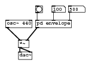
#N canvas 70 564 226 135 10; #N canvas 73 160 290 192 envelope 1; #X obj 105 5 inlet attack; #X obj 201 5 inlet decay; #X obj 58 146 line~; #X msg 58 114 1 \$1; #X msg 98 114 0 \$1; #X obj 4 5 inlet trigger; #X obj 4 37 t b b; #X obj 58 91 f; #X obj 98 91 f; #X obj 98 69 del; #X obj 58 170 outlet~ envelope; #X connect 0 0 7 1; #X connect 0 0 9 1; #X connect 1 0 8 1; #X connect 2 0 10 0; #X connect 3 0 2 0; #X connect 4 0 2 0; #X connect 5 0 6 0; #X connect 6 0 7 0; #X connect 6 1 9 0; #X connect 7 0 3 0; #X connect 8 0 4 0; #X connect 9 0 8 0; #X restore 77 40 pd envelope; #X floatatom 113 9 4 0 0 0 - - -; #X floatatom 149 9 5 0 0 0 - - -; #X obj 77 9 bng 15 250 50 0 empty empty empty 0 -6 0 8 -262144 -1 -1 ; #X obj 11 40 osc~ 440; #X obj 39 84 *~; #X obj 39 110 dac~; #X connect 0 0 5 1; #X connect 1 0 0 1; #X connect 2 0 0 2; #X connect 3 0 0 0; #X connect 4 0 5 0; #X connect 5 0 6 0; #X connect 5 0 6 1;
Download anenvelope.pd.
AD Envelope subpatch
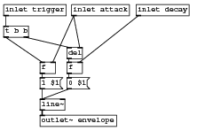
#N canvas 67 315 617 209 10; #N canvas 73 160 290 192 envelope 0; #X obj 105 5 inlet attack; #X obj 201 5 inlet decay; #X obj 58 146 line~; #X msg 58 114 1 \$1; #X msg 98 114 0 \$1; #X obj 4 5 inlet trigger; #X obj 4 37 t b b; #X obj 58 91 f; #X obj 98 91 f; #X obj 98 69 del; #X obj 58 170 outlet~ envelope; #X connect 0 0 7 1; #X connect 0 0 9 1; #X connect 1 0 8 1; #X connect 2 0 10 0; #X connect 3 0 2 0; #X connect 4 0 2 0; #X connect 5 0 6 0; #X connect 6 0 7 0; #X connect 6 1 9 0; #X connect 7 0 3 0; #X connect 8 0 4 0; #X connect 9 0 8 0; #X restore 77 40 pd envelope; #X floatatom 113 9 4 0 0 0 - - -; #X floatatom 149 9 5 0 0 0 - - -; #X obj 77 9 bng 15 250 50 0 empty empty empty 0 -6 0 8 -262144 -1 -1 ; #X obj 5 73 osc~ 440; #X obj 33 117 *~; #X obj 82 182 dac~; #N canvas 73 160 290 192 envelope 0; #X obj 105 5 inlet attack; #X obj 201 5 inlet decay; #X obj 58 146 line~; #X msg 58 114 1 \$1; #X msg 98 114 0 \$1; #X obj 4 5 inlet trigger; #X obj 4 37 t b b; #X obj 58 91 f; #X obj 98 91 f; #X obj 98 69 del; #X obj 58 170 outlet~ envelope; #X connect 0 0 7 1; #X connect 0 0 9 1; #X connect 1 0 8 1; #X connect 2 0 10 0; #X connect 3 0 2 0; #X connect 4 0 2 0; #X connect 5 0 6 0; #X connect 6 0 7 0; #X connect 6 1 9 0; #X connect 7 0 3 0; #X connect 8 0 4 0; #X connect 9 0 8 0; #X restore 199 41 pd envelope; #X floatatom 235 10 4 0 0 0 - - -; #X floatatom 271 10 5 0 0 0 - - -; #X obj 199 10 bng 15 250 50 0 empty empty empty 0 -6 0 8 -262144 -1 -1; #X obj 160 113 *~; #X obj 132 69 osc~ 660; #X obj 83 151 +~; #X text 211 103 We can make lots of copies of this subpatch; #X connect 0 0 5 1; #X connect 1 0 0 1; #X connect 2 0 0 2; #X connect 3 0 0 0; #X connect 4 0 5 0; #X connect 5 0 13 0; #X connect 7 0 11 1; #X connect 8 0 7 1; #X connect 9 0 7 2; #X connect 10 0 7 0; #X connect 11 0 13 1; #X connect 12 0 11 0; #X connect 13 0 6 0; #X connect 13 0 6 1;
Download anenvelope-subpatch.pd.
MIDI monosynth using envelope subpatch
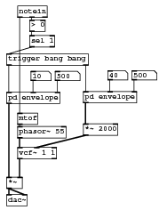
#N canvas 397 158 244 308 10; #N canvas 73 160 290 192 envelope 1; #X obj 105 5 inlet attack; #X obj 201 5 inlet decay; #X obj 58 146 line~; #X msg 58 114 1 \$1; #X msg 98 114 0 \$1; #X obj 4 5 inlet trigger; #X obj 4 37 t b b; #X obj 58 91 f; #X obj 98 91 f; #X obj 98 69 del; #X obj 58 170 outlet~ envelope; #X connect 0 0 7 1; #X connect 0 0 9 1; #X connect 1 0 8 1; #X connect 2 0 10 0; #X connect 3 0 2 0; #X connect 4 0 2 0; #X connect 5 0 6 0; #X connect 6 0 7 0; #X connect 6 1 9 0; #X connect 7 0 3 0; #X connect 8 0 4 0; #X connect 9 0 8 0; #X restore -2 119 pd envelope; #X floatatom 34 88 4 0 0 0 - - -; #X floatatom 70 88 5 0 0 0 - - -; #X obj -2 245 *~; #X obj -2 271 dac~; #N canvas 73 160 290 192 envelope 1; #X obj 105 5 inlet attack; #X obj 201 5 inlet decay; #X obj 58 146 line~; #X msg 58 114 1 \$1; #X msg 98 114 0 \$1; #X obj 4 5 inlet trigger; #X obj 4 37 t b b; #X obj 58 91 f; #X obj 98 91 f; #X obj 98 69 del; #X obj 58 170 outlet~ envelope; #X connect 0 0 7 1; #X connect 0 0 9 1; #X connect 1 0 8 1; #X connect 2 0 10 0; #X connect 3 0 2 0; #X connect 4 0 2 0; #X connect 5 0 6 0; #X connect 6 0 7 0; #X connect 6 1 9 0; #X connect 7 0 3 0; #X connect 8 0 4 0; #X connect 9 0 8 0; #X restore 112 118 pd envelope; #X floatatom 148 87 4 0 0 0 - - -; #X floatatom 184 87 5 0 0 0 - - -; #X obj -2 62 trigger bang bang; #X obj 14 201 vcf~ 1 1; #X obj 112 166 *~ 2000; #X obj 14 170 phasor~ 55; #X obj 14 -9 notein; #X obj 14 150 mtof; #X obj 32 12 > 0; #X obj 32 35 sel 1; #X connect 0 0 3 0; #X connect 1 0 0 1; #X connect 2 0 0 2; #X connect 3 0 4 0; #X connect 3 0 4 1; #X connect 5 0 10 0; #X connect 6 0 5 1; #X connect 7 0 5 2; #X connect 8 0 0 0; #X connect 8 1 5 0; #X connect 9 0 3 1; #X connect 10 0 9 1; #X connect 11 0 9 0; #X connect 12 0 13 0; #X connect 12 1 14 0; #X connect 13 0 11 0; #X connect 14 0 15 0; #X connect 15 0 8 0;
Download anenvelope2.pd.
Table oscillator (example of using an abstraction)
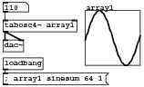
#N canvas 122 214 234 156 10; #N canvas 0 0 450 300 graph3 0; #X array \$0-array1 67 float 1; #A 0 -0.0980171 0 0.0980171 0.19509 0.290284 0.382683 0.471396 0.55557 0.634393 0.707106 0.77301 0.831469 0.881921 0.923879 0.95694 0.980785 0.995185 1 0.995185 0.980786 0.956941 0.92388 0.881922 0.831471 0.773012 0.707108 0.634395 0.555572 0.471399 0.382686 0.290287 0.195093 0.0980197 2.65359e-06 -0.0980144 -0.195088 -0.290282 -0.382681 -0.471394 -0.555568 -0.634391 -0.707104 -0.773008 -0.831468 -0.88192 -0.923878 -0.956939 -0.980785 -0.995184 -1 -0.995185 -0.980786 -0.956942 -0.923881 -0.881923 -0.831472 -0.773013 -0.70711 -0.634397 -0.555574 -0.471401 -0.382688 -0.29029 -0.195095 -0.0980223 -5.30718e-06 0.0980118; #X coords 0 1 66 -1 80 80 1; #X restore 56 70 graph; #X obj 136 -1 loadbang; #X obj -1 21 tabosc4~ \$0-array1; #X obj -1 -1 inlet pitch; #X msg 136 21 sinesum 64 1; #X obj 136 44 s \$0-array1; #X obj -1 43 outlet~; #X connect 1 0 4 0; #X connect 2 0 6 0; #X connect 3 0 2 0; #X connect 4 0 5 0;
Download table-oscillator.pd.
Table oscillator (abstraction used)
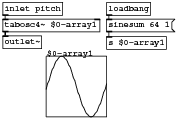
#N canvas 122 214 234 156 10; #N canvas 0 0 450 300 graph3 0; #X array \$0-array1 67 float 1; #A 0 -0.0980171 0 0.0980171 0.19509 0.290284 0.382683 0.471396 0.55557 0.634393 0.707106 0.77301 0.831469 0.881921 0.923879 0.95694 0.980785 0.995185 1 0.995185 0.980786 0.956941 0.92388 0.881922 0.831471 0.773012 0.707108 0.634395 0.555572 0.471399 0.382686 0.290287 0.195093 0.0980197 2.65359e-06 -0.0980144 -0.195088 -0.290282 -0.382681 -0.471394 -0.555568 -0.634391 -0.707104 -0.773008 -0.831468 -0.88192 -0.923878 -0.956939 -0.980785 -0.995184 -1 -0.995185 -0.980786 -0.956942 -0.923881 -0.881923 -0.831472 -0.773013 -0.70711 -0.634397 -0.555574 -0.471401 -0.382688 -0.29029 -0.195095 -0.0980223 -5.30718e-06 0.0980118; #X coords 0 1 66 -1 80 80 1; #X restore 56 70 graph; #X obj 136 -1 loadbang; #X obj -1 21 tabosc4~ \$0-array1; #X obj -1 -1 inlet pitch; #X msg 136 21 sinesum 64 1; #X obj 136 44 s \$0-array1; #X obj -1 43 outlet~; #X connect 1 0 4 0; #X connect 2 0 6 0; #X connect 3 0 2 0; #X connect 4 0 5 0;
Download my-tabosc.pd.
Editing abstractions
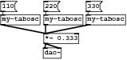
#N canvas 229 514 411 110 10; #X obj -4 -3 my-tabosc2 640 0; #X obj 113 -3 my-tabosc2 1280 1; #X obj 238 -3 my-tabosc2 1920 0; #N canvas 0 0 450 300 grapha 0; #X obj 100 100 cnv 15 100 100 empty empty empty 20 12 0 14 -262144 -66577 0; #N canvas 0 0 450 300 graph3 0; #X array A 100 float 0; #X coords 0 1 99 -1 70 70 1; #X restore 100 100 graph; #X obj 210 209 tabwrite~ A; #X obj 289 155 inlet~; #X obj 210 130 loadbang; #X obj 278 131 bng 15 250 50 0 empty empty empty 0 -6 0 8 -262144 -1 -1; #X obj 217 178 s b; #X obj 210 155 metro 200; #X connect 3 0 2 0; #X connect 4 0 7 0; #X connect 5 0 7 0; #X connect 7 0 2 0; #X connect 7 0 6 0; #X coords 0 -1 1 1 70 70 1 100 100; #X restore 19 28 pd grapha; #N canvas 0 0 450 300 grapha 0; #X obj 100 100 cnv 15 100 100 empty empty empty 20 12 0 14 -262144 -66577 0; #N canvas 0 0 450 300 graph3 0; #X array B 100 float 0; #X coords 0 1 99 -1 70 70 1; #X restore 100 100 graph; #X obj 289 155 inlet~; #X obj 210 130 loadbang; #X obj 278 131 bng 15 250 50 0 empty empty empty 0 -6 0 8 -262144 -1 -1; #X obj 217 178 s b; #X obj 210 155 metro 200; #X obj 210 209 tabwrite~ B; #X connect 2 0 7 0; #X connect 3 0 6 0; #X connect 4 0 6 0; #X connect 6 0 5 0; #X connect 6 0 7 0; #X coords 0 -1 1 1 70 70 1 100 100; #X restore 135 28 pd grapha; #N canvas 0 0 450 300 grapha 0; #X obj 100 100 cnv 15 100 100 empty empty empty 20 12 0 14 -262144 -66577 0; #N canvas 0 0 450 300 graph3 0; #X array C 100 float 0; #X coords 0 1 99 -1 70 70 1; #X restore 100 100 graph; #X obj 289 155 inlet~; #X obj 210 130 loadbang; #X obj 278 131 bng 15 250 50 0 empty empty empty 0 -6 0 8 -262144 -1 -1; #X obj 217 178 s b; #X obj 210 155 metro 200; #X obj 210 209 tabwrite~ C; #X connect 2 0 7 0; #X connect 3 0 6 0; #X connect 4 0 6 0; #X connect 6 0 5 0; #X connect 6 0 7 0; #X coords 0 -1 1 1 70 70 1 100 100; #X restore 262 29 pd grapha; #X connect 0 0 3 0; #X connect 1 0 4 0; #X connect 2 0 5 0;
Download wavetablesynth2.pd.
Initialising abstractions
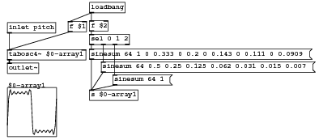
#N canvas 122 214 516 225 10; #N canvas 0 0 450 300 graph3 0; #X array \$0-array1 67 float 1; #A 0 -0.185181 0 0.185181 0.353002 0.489677 0.587529 0.645805 0.669681 0.667922 0.650072 0.624077 0.594995 0.564957 0.534092 0.501833 0.468005 0.433284 0.399 0.366524 0.336628 0.309186 0.283325 0.257931 0.232217 0.206081 0.180072 0.155022 0.131541 0.109657 0.0887629 0.0679085 0.0462634 0.0235163 6.39515e-07 -0.0235151 -0.0462622 -0.0679073 -0.0887618 -0.109656 -0.13154 -0.15502 -0.180071 -0.20608 -0.232216 -0.25793 -0.283324 -0.309184 -0.336626 -0.366522 -0.398999 -0.433282 -0.468003 -0.501832 -0.53409 -0.564956 -0.594993 -0.624075 -0.650071 -0.667922 -0.669681 -0.645807 -0.587533 -0.489684 -0.35301 -0.18519 -1.01739e-05 0.185171; #X coords 0 1 66 -1 80 80 1; #X restore 7 140 graph; #X obj 141 1 loadbang; #X obj 7 78 tabosc4~ \$0-array1; #X obj 7 34 inlet pitch; #X obj 141 144 s \$0-array1; #X obj 7 100 outlet~; #X obj 106 32 f \$1; #X obj 141 31 f \$2; #X msg 141 77 sinesum 64 1 0 0.333 0 0.2 0 0.143 0 0.111 0 0.0909; #X msg 160 98 sinesum 64 0.5 0.25 0.125 0.062 0.031 0.015 0.007; #X msg 179 119 sinesum 64 1; #X obj 141 53 sel 0 1 2; #X connect 1 0 7 0; #X connect 1 0 6 0; #X connect 2 0 5 0; #X connect 3 0 2 0; #X connect 6 0 2 0; #X connect 7 0 11 0; #X connect 8 0 4 0; #X connect 9 0 4 0; #X connect 10 0 4 0; #X connect 11 0 8 0; #X connect 11 1 9 0; #X connect 11 2 10 0;
Download my-tabosc2.pd.
Abstraction instances
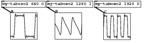
#N canvas 229 514 411 110 10; #X obj -4 -3 my-tabosc2 640 0; #X obj 113 -3 my-tabosc2 1280 1; #X obj 238 -3 my-tabosc2 1920 0; #N canvas 0 0 450 300 grapha 0; #X obj 100 100 cnv 15 100 100 empty empty empty 20 12 0 14 -262144 -66577 0; #N canvas 0 0 450 300 graph3 0; #X array A 100 float 0; #X coords 0 1 99 -1 70 70 1; #X restore 100 100 graph; #X obj 210 209 tabwrite~ A; #X obj 289 155 inlet~; #X obj 210 130 loadbang; #X obj 278 131 bng 15 250 50 0 empty empty empty 0 -6 0 8 -262144 -1 -1; #X obj 217 178 s b; #X obj 210 155 metro 200; #X connect 3 0 2 0; #X connect 4 0 7 0; #X connect 5 0 7 0; #X connect 7 0 2 0; #X connect 7 0 6 0; #X coords 0 -1 1 1 70 70 1 100 100; #X restore 19 28 pd grapha; #N canvas 0 0 450 300 grapha 0; #X obj 100 100 cnv 15 100 100 empty empty empty 20 12 0 14 -262144 -66577 0; #N canvas 0 0 450 300 graph3 0; #X array B 100 float 0; #X coords 0 1 99 -1 70 70 1; #X restore 100 100 graph; #X obj 289 155 inlet~; #X obj 210 130 loadbang; #X obj 278 131 bng 15 250 50 0 empty empty empty 0 -6 0 8 -262144 -1 -1; #X obj 217 178 s b; #X obj 210 155 metro 200; #X obj 210 209 tabwrite~ B; #X connect 2 0 7 0; #X connect 3 0 6 0; #X connect 4 0 6 0; #X connect 6 0 5 0; #X connect 6 0 7 0; #X coords 0 -1 1 1 70 70 1 100 100; #X restore 135 28 pd grapha; #N canvas 0 0 450 300 grapha 0; #X obj 100 100 cnv 15 100 100 empty empty empty 20 12 0 14 -262144 -66577 0; #N canvas 0 0 450 300 graph3 0; #X array C 100 float 0; #X coords 0 1 99 -1 70 70 1; #X restore 100 100 graph; #X obj 289 155 inlet~; #X obj 210 130 loadbang; #X obj 278 131 bng 15 250 50 0 empty empty empty 0 -6 0 8 -262144 -1 -1; #X obj 217 178 s b; #X obj 210 155 metro 200; #X obj 210 209 tabwrite~ C; #X connect 2 0 7 0; #X connect 3 0 6 0; #X connect 4 0 6 0; #X connect 6 0 5 0; #X connect 6 0 7 0; #X coords 0 -1 1 1 70 70 1 100 100; #X restore 262 29 pd grapha; #X connect 0 0 3 0; #X connect 1 0 4 0; #X connect 2 0 5 0;
Download wavetablesynth2.pd.
Graph on parent example
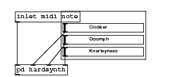
#N canvas 299 174 280 125 10; #X obj 106 120 hsl 128 15 0 127 0 1 empty empty Clobber 40 7 1 8 -262144 -1 -1 0 1; #X obj 106 140 hsl 128 15 0 127 0 1 empty empty Ooomph 40 7 1 8 -262144 -1 -1 0 1; #X obj 106 160 hsl 128 15 0 127 0 1 empty empty Knarleyness 40 7 1 8 -262144 -1 -1 0 1; #N canvas 0 0 450 300 hardsynth 0; #X obj 115 56 inlet; #X obj 160 56 inlet; #X obj 206 55 inlet; #X obj 148 127 outlet~; #X obj 66 56 inlet; #X restore 24 189 pd hardsynth; #X obj 24 101 inlet midi note; #X connect 0 0 3 1; #X connect 1 0 3 2; #X connect 2 0 3 3; #X connect 4 0 3 0; #X coords 0 -1 1 1 140 80 1 100 100;
Download GOP-hardsynth.pd.
GOP appearance
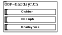
#N canvas 206 560 159 89 10; #X obj 8 3 GOP-hardsynth;
Download use-gop.pd.
Preconditioning parameters
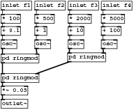
#N canvas 0 0 450 300 10; #X obj 0 1 inlet f1; #X obj 0 74 osc~; #X obj 64 74 osc~; #X obj 64 49 + 1; #X obj 64 1 inlet f2; #X obj 127 74 osc~; #X obj 190 74 osc~; #X obj 190 1 inlet f4; #X obj 127 1 inlet f3; #N canvas 0 0 450 300 ringmod 0; #X obj 98 42 inlet~; #X obj 148 42 inlet~; #X obj 117 130 outlet~; #X obj 116 78 *~; #X obj 117 103 +~; #X connect 0 0 3 0; #X connect 0 0 4 1; #X connect 1 0 3 1; #X connect 1 0 4 1; #X connect 3 0 4 0; #X connect 4 0 2 0; #X restore 0 101 pd ringmod; #N canvas 0 0 450 300 ringmod 0; #X obj 98 42 inlet~; #X obj 148 42 inlet~; #X obj 117 130 outlet~; #X obj 116 78 *~; #X obj 117 103 +~; #X connect 0 0 3 0; #X connect 0 0 4 1; #X connect 1 0 3 1; #X connect 1 0 4 1; #X connect 3 0 4 0; #X connect 4 0 2 0; #X restore 126 99 pd ringmod; #N canvas 0 0 450 300 ringmod 0; #X obj 98 42 inlet~; #X obj 148 42 inlet~; #X obj 117 130 outlet~; #X obj 116 78 *~; #X obj 117 103 +~; #X connect 0 0 3 0; #X connect 0 0 4 1; #X connect 1 0 3 1; #X connect 1 0 4 1; #X connect 3 0 4 0; #X connect 4 0 2 0; #X restore 0 138 pd ringmod; #X obj 0 187 outlet~; #X obj 127 26 * 2000; #X obj 127 49 + 10; #X obj 0 26 * 100; #X obj 0 49 + 0.1; #X obj 64 26 * 500; #X obj 190 26 * 5000; #X obj 190 49 + 100; #X obj 0 162 *~ 0.05; #X connect 0 0 15 0; #X connect 1 0 9 0; #X connect 2 0 9 1; #X connect 3 0 2 0; #X connect 4 0 17 0; #X connect 5 0 10 0; #X connect 6 0 10 1; #X connect 7 0 18 0; #X connect 8 0 13 0; #X connect 9 0 11 0; #X connect 10 0 11 1; #X connect 11 0 20 0; #X connect 13 0 14 0; #X connect 14 0 5 0; #X connect 15 0 16 0; #X connect 16 0 1 0; #X connect 17 0 3 0; #X connect 18 0 19 0; #X connect 19 0 6 0; #X connect 20 0 12 0;
Download preconditioner-patch.pd.
Unpacking parameter lists
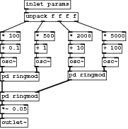
#N canvas 525 559 450 300 10; #X obj -3 105 osc~; #X obj 61 105 osc~; #X obj 61 80 + 1; #X obj 124 105 osc~; #X obj 187 105 osc~; #N canvas 0 0 450 300 ringmod 0; #X obj 98 42 inlet~; #X obj 148 42 inlet~; #X obj 117 130 outlet~; #X obj 116 78 *~; #X obj 117 103 +~; #X connect 0 0 3 0; #X connect 0 0 4 1; #X connect 1 0 3 1; #X connect 1 0 4 1; #X connect 3 0 4 0; #X connect 4 0 2 0; #X restore -3 132 pd ringmod; #N canvas 0 0 450 300 ringmod 0; #X obj 98 42 inlet~; #X obj 148 42 inlet~; #X obj 117 130 outlet~; #X obj 116 78 *~; #X obj 117 103 +~; #X connect 0 0 3 0; #X connect 0 0 4 1; #X connect 1 0 3 1; #X connect 1 0 4 1; #X connect 3 0 4 0; #X connect 4 0 2 0; #X restore 123 130 pd ringmod; #N canvas 0 0 450 300 ringmod 0; #X obj 98 42 inlet~; #X obj 148 42 inlet~; #X obj 117 130 outlet~; #X obj 116 78 *~; #X obj 117 103 +~; #X connect 0 0 3 0; #X connect 0 0 4 1; #X connect 1 0 3 1; #X connect 1 0 4 1; #X connect 3 0 4 0; #X connect 4 0 2 0; #X restore -3 169 pd ringmod; #X obj -3 218 outlet~; #X obj 124 57 * 2000; #X obj 124 80 + 10; #X obj -3 57 * 100; #X obj -3 80 + 0.1; #X obj 61 57 * 500; #X obj 187 57 * 5000; #X obj 187 80 + 100; #X obj -3 193 *~ 0.05; #X obj 42 21 unpack f f f f; #X obj 42 -2 inlet params; #X connect 0 0 5 0; #X connect 1 0 5 1; #X connect 2 0 1 0; #X connect 3 0 6 0; #X connect 4 0 6 1; #X connect 5 0 7 0; #X connect 6 0 7 1; #X connect 7 0 16 0; #X connect 9 0 10 0; #X connect 10 0 3 0; #X connect 11 0 12 0; #X connect 12 0 0 0; #X connect 13 0 2 0; #X connect 14 0 15 0; #X connect 15 0 4 0; #X connect 16 0 8 0; #X connect 17 0 11 0; #X connect 17 1 13 0; #X connect 17 2 9 0; #X connect 17 3 14 0; #X connect 18 0 17 0;
Download unpack-patch.pd.
Packing parameter lists (patch programmer)
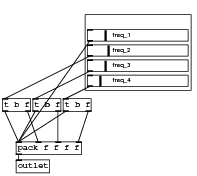
#N canvas 0 0 450 300 10; #X obj 179 70 hsl 128 15 0 1 0 1 empty empty freq_2 30 7 1 8 -262144 -1 -1 2500 1; #X obj 179 50 hsl 128 15 0 1 0 1 empty empty freq_1 30 7 1 8 -262144 -1 -1 2100 1; #X obj 179 90 hsl 128 15 0 1 0 1 empty empty freq_3 30 7 1 8 -262144 -1 -1 2100 1; #X obj 179 110 hsl 128 15 0 1 0 1 empty empty freq_4 30 7 1 8 -262144 -1 -1 1400 1; #X obj 82 198 pack f f f f; #X obj 64 141 t b f; #X obj 104 141 t b f; #X obj 144 141 t b f; #X obj 82 222 outlet; #X obj 140 223 print; #X connect 0 0 5 0; #X connect 1 0 4 0; #X connect 2 0 6 0; #X connect 3 0 7 0; #X connect 4 0 8 0; #X connect 4 0 9 0; #X connect 5 0 4 0; #X connect 5 1 4 1; #X connect 6 0 4 0; #X connect 6 1 4 2; #X connect 7 0 4 0; #X connect 7 1 4 3;
Download programmer.pd.
Storing parameter lists (patch programmer)
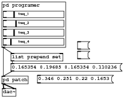
#N canvas 276 535 450 300 10; #N canvas 110 49 235 238 patch 0; #X obj -3 105 osc~; #X obj 61 105 osc~; #X obj 61 80 + 1; #X obj 124 105 osc~; #X obj 187 105 osc~; #N canvas 0 0 450 300 ringmod 0; #X obj 98 42 inlet~; #X obj 148 42 inlet~; #X obj 117 130 outlet~; #X obj 116 78 *~; #X obj 117 103 +~; #X connect 0 0 3 0; #X connect 0 0 4 1; #X connect 1 0 3 1; #X connect 1 0 4 1; #X connect 3 0 4 0; #X connect 4 0 2 0; #X restore -3 132 pd ringmod; #N canvas 0 0 450 300 ringmod 0; #X obj 98 42 inlet~; #X obj 148 42 inlet~; #X obj 117 130 outlet~; #X obj 116 78 *~; #X obj 117 103 +~; #X connect 0 0 3 0; #X connect 0 0 4 1; #X connect 1 0 3 1; #X connect 1 0 4 1; #X connect 3 0 4 0; #X connect 4 0 2 0; #X restore 123 130 pd ringmod; #N canvas 0 0 450 300 ringmod 0; #X obj 98 42 inlet~; #X obj 148 42 inlet~; #X obj 117 130 outlet~; #X obj 116 78 *~; #X obj 117 103 +~; #X connect 0 0 3 0; #X connect 0 0 4 1; #X connect 1 0 3 1; #X connect 1 0 4 1; #X connect 3 0 4 0; #X connect 4 0 2 0; #X restore -3 169 pd ringmod; #X obj -3 218 outlet~; #X obj 124 57 * 2000; #X obj 124 80 + 10; #X obj -3 57 * 100; #X obj -3 80 + 0.1; #X obj 61 57 * 500; #X obj 187 57 * 5000; #X obj 187 80 + 100; #X obj -3 193 *~ 0.05; #X obj 42 21 unpack f f f f; #X obj 42 -2 inlet params; #X connect 0 0 5 0; #X connect 1 0 5 1; #X connect 2 0 1 0; #X connect 3 0 6 0; #X connect 4 0 6 1; #X connect 5 0 7 0; #X connect 6 0 7 1; #X connect 7 0 16 0; #X connect 9 0 10 0; #X connect 10 0 3 0; #X connect 11 0 12 0; #X connect 12 0 0 0; #X connect 13 0 2 0; #X connect 14 0 15 0; #X connect 15 0 4 0; #X connect 16 0 8 0; #X connect 17 0 11 0; #X connect 17 1 13 0; #X connect 17 2 9 0; #X connect 17 3 14 0; #X connect 18 0 17 0; #X restore 2 165 pd patch; #X obj 3 192 dac~; #N canvas 113 84 314 357 programer 0; #X obj 106 140 hsl 128 15 0 1 0 1 empty empty freq_2 30 7 1 8 -262144 -1 -1 3200 1; #X obj 106 120 hsl 128 15 0 1 0 1 empty empty freq_1 30 7 1 8 -262144 -1 -1 2700 1; #X obj 106 160 hsl 128 15 0 1 0 1 empty empty freq_3 30 7 1 8 -262144 -1 -1 2600 1; #X obj 106 180 hsl 128 15 0 1 0 1 empty empty freq_4 30 7 1 8 -262144 -1 -1 1900 1; #X obj 9 268 pack f f f f; #X obj -9 211 t b f; #X obj 31 211 t b f; #X obj 71 211 t b f; #X obj 9 292 outlet; #X connect 0 0 5 0; #X connect 1 0 4 0; #X connect 2 0 6 0; #X connect 3 0 7 0; #X connect 4 0 8 0; #X connect 5 0 4 0; #X connect 5 1 4 1; #X connect 6 0 4 0; #X connect 6 1 4 2; #X connect 7 0 4 0; #X connect 7 1 4 3; #X coords 0 -1 1 1 140 100 1 100 100; #X restore 2 2 pd programer; #X msg 22 137 0.212598 0.251969 0.204724 0.149606; #X msg 168 89; #X msg 168 110; #X msg 80 163 0.346 0.251 0.22 0.1653; #X msg 26 110 set \$1 \$2 \$3 \$4; #X connect 0 0 1 0; #X connect 0 0 1 1; #X connect 2 0 0 0; #X connect 2 0 7 0; #X connect 3 0 0 0; #X connect 7 0 3 0;
Download storingparams.pd.
Stacking voices (summation chaining)
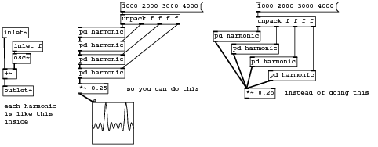
#N canvas 231 193 632 245 10; #N canvas 0 0 450 300 harmonic 0; #X obj 109 48 inlet~; #X obj 110 117 +~; #X obj 110 146 outlet~; #X obj 166 73 osc~; #X obj 166 47 inlet f; #X connect 0 0 1 0; #X connect 1 0 2 0; #X connect 3 0 1 1; #X connect 4 0 3 0; #X restore 129 43 pd harmonic; #X obj 2 44 inlet~; #X obj 3 113 +~; #X obj 3 142 outlet~; #X obj 19 87 osc~; #X obj 19 67 inlet f; #N canvas 0 0 450 300 harmonic 0; #X obj 109 48 inlet~; #X obj 110 117 +~; #X obj 110 146 outlet~; #X obj 166 73 osc~; #X obj 166 47 inlet f; #X connect 0 0 1 0; #X connect 1 0 2 0; #X connect 3 0 1 1; #X connect 4 0 3 0; #X restore 129 66 pd harmonic; #N canvas 0 0 450 300 harmonic 0; #X obj 109 48 inlet~; #X obj 110 117 +~; #X obj 110 146 outlet~; #X obj 166 73 osc~; #X obj 166 47 inlet f; #X connect 0 0 1 0; #X connect 1 0 2 0; #X connect 3 0 1 1; #X connect 4 0 3 0; #X restore 129 89 pd harmonic; #N canvas 0 0 450 300 harmonic 0; #X obj 109 48 inlet~; #X obj 110 117 +~; #X obj 110 146 outlet~; #X obj 166 73 osc~; #X obj 166 47 inlet f; #X connect 0 0 1 0; #X connect 1 0 2 0; #X connect 3 0 1 1; #X connect 4 0 3 0; #X restore 129 112 pd harmonic; #X obj 201 21 unpack f f f f; #X obj 129 138 *~ 0.25; #N canvas 0 0 450 300 grapha 0; #X obj 100 100 cnv 15 100 100 empty empty empty 20 12 0 14 -262144 -66577 0; #N canvas 0 0 450 300 graph3 0; #X array A 100 float 0; #X coords 0 1 99 -1 70 70 1; #X restore 100 100 graph; #X obj 210 209 tabwrite~ A; #X obj 289 155 inlet~; #X obj 210 130 loadbang; #X obj 278 131 bng 15 250 50 0 empty empty empty 0 -6 0 8 -262144 -1 -1; #X obj 217 178 s b; #X obj 210 155 metro 200; #X connect 3 0 2 0; #X connect 4 0 7 0; #X connect 5 0 7 0; #X connect 7 0 2 0; #X connect 7 0 6 0; #X coords 0 -1 1 1 70 70 1 100 100; #X restore 153 170 pd grapha; #N canvas 0 0 450 300 harmonic 0; #X obj 109 48 inlet~; #X obj 110 117 +~; #X obj 110 146 outlet~; #X obj 166 73 osc~; #X obj 166 47 inlet f; #X connect 0 0 1 0; #X connect 1 0 2 0; #X connect 3 0 1 1; #X connect 4 0 3 0; #X restore 357 50 pd harmonic; #N canvas 0 0 450 300 harmonic 0; #X obj 109 48 inlet~; #X obj 110 117 +~; #X obj 110 146 outlet~; #X obj 166 73 osc~; #X obj 166 47 inlet f; #X connect 0 0 1 0; #X connect 1 0 2 0; #X connect 3 0 1 1; #X connect 4 0 3 0; #X restore 388 71 pd harmonic; #N canvas 0 0 450 300 harmonic 0; #X obj 109 48 inlet~; #X obj 110 117 +~; #X obj 110 146 outlet~; #X obj 166 73 osc~; #X obj 166 47 inlet f; #X connect 0 0 1 0; #X connect 1 0 2 0; #X connect 3 0 1 1; #X connect 4 0 3 0; #X restore 419 93 pd harmonic; #N canvas 0 0 450 300 harmonic 0; #X obj 109 48 inlet~; #X obj 110 117 +~; #X obj 110 146 outlet~; #X obj 166 73 osc~; #X obj 166 47 inlet f; #X connect 0 0 1 0; #X connect 1 0 2 0; #X connect 3 0 1 1; #X connect 4 0 3 0; #X restore 450 116 pd harmonic; #X obj 429 25 unpack f f f f; #X obj 410 146 *~ 0.25; #X text 475 146 instead of doing this; #X msg 201 0 1000 2000 3000 4000; #X text 209 140 so you can do this; #X text 3 169 each harmonic is like this inside; #X msg 429 0 1000 2000 3000 4000; #X connect 0 0 6 0; #X connect 1 0 2 0; #X connect 2 0 3 0; #X connect 4 0 2 1; #X connect 5 0 4 0; #X connect 6 0 7 0; #X connect 7 0 8 0; #X connect 8 0 10 0; #X connect 9 0 0 1; #X connect 9 1 6 1; #X connect 9 2 7 1; #X connect 9 3 8 1; #X connect 10 0 11 0; #X connect 12 0 17 0; #X connect 13 0 17 0; #X connect 14 0 17 0; #X connect 15 0 17 0; #X connect 16 0 12 1; #X connect 16 1 13 1; #X connect 16 2 14 1; #X connect 16 3 15 1; #X connect 19 0 9 0; #X connect 22 0 16 0;
Download summation-chains.pd.
Routing named parameters
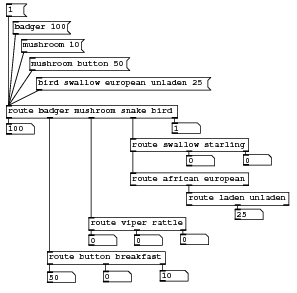
#N canvas 233 194 389 383 10; #X msg 16 26 badger 100; #X floatatom 7 161 5 0 0 0 - - -; #X obj 61 330 route button breakfast; #X floatatom 61 357 5 0 0 0 - - -; #X floatatom 210 355 5 0 0 0 - - -; #X floatatom 135 356 5 0 0 0 - - -; #X msg 27 50 mushroom 10; #X msg 38 74 mushroom button 50; #X obj 116 285 route viper rattle; #X obj 7 137 route badger mushroom snake bird; #X floatatom 116 308 5 0 0 0 - - -; #X floatatom 176 308 5 0 0 0 - - -; #X floatatom 237 307 5 0 0 0 - - -; #X floatatom 320 202 5 0 0 0 - - -; #X obj 171 181 route swallow starling; #X obj 171 226 route african european; #X floatatom 245 203 5 0 0 0 - - -; #X obj 245 252 route laden unladen; #X floatatom 309 274 5 0 0 0 - - -; #X msg 47 100 bird swallow european unladen 25; #X floatatom 226 160 5 0 0 0 - - -; #X msg 7 3 1; #X connect 0 0 9 0; #X connect 2 0 3 0; #X connect 2 1 5 0; #X connect 2 2 4 0; #X connect 6 0 9 0; #X connect 7 0 9 0; #X connect 8 0 10 0; #X connect 8 1 11 0; #X connect 8 2 12 0; #X connect 9 0 1 0; #X connect 9 1 2 0; #X connect 9 2 8 0; #X connect 9 3 14 0; #X connect 9 4 20 0; #X connect 14 0 15 0; #X connect 14 1 16 0; #X connect 14 2 13 0; #X connect 15 1 17 0; #X connect 17 1 18 0; #X connect 19 0 9 0; #X connect 21 0 9 0;
Download routed-parameters.pd.
- Index
- Chapters 9 to 14
- Introductory Pure Data
- 9: Starting with Pure Data
- 10: Using Pure Data
- 11: Pure Data Audio
- 12: Abstraction
- 13: Shaping Sound
- 14: Pure Data Essentials
- Chapters 17 to 21
- Techniques
- 17: Summation
- 18: Tables
- 19: Non-linear
- 20: Modulation
- 21: Granular Methods
- Practical Series 1
- Artificial Sounds
- 1: Pedestrian Crossing
- 2: Telephone Siganlling Tones
- 3: DTMF Dialling Tones
- 4: Alarm and Menu Sounds
- 5: Police Siren
- Practical Series 2
- Idiophonics
- 6: Telephone Bell
- 7: Bouncing Ball
- 8: Rolling Tin Can
- 9: Creaking Door
- 10: Boingy Sound
- Practical Series 3
- Nature
- 11: Fire
- 12: Bubbles
- 13: Running Water
- 14: Pouring
- 15: Rain
- 16: Electricity
- 17: Thunder
- 18: Wind
- Practical Series 4
- Machines
- 19: Switches
- 20: Clocks
- 21: Motors
- 22: Cars
- 23: Fans
- 24: Jet Engine
- 25: Helicopter
- Practical Series 5
- Practical Series 6
- Project Mayhem
- 30: Guns
- 31: Explosions
- 32: Rocket Launcher
- Practical Series 7
- Science Fiction
- 33: Transporter
- 34: R2D2
- 35: Red Alert